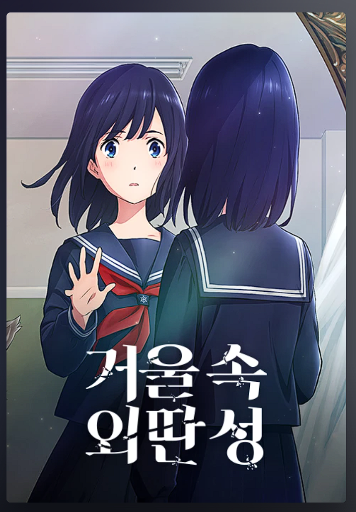

일본 추리 소설을 원작으로 한 애니메이션 영화이다.
- 학폭 피해자의 치유에 대한 영화이다.
- 티빙, 왓챠에서 방영중이다.
- 가해자는 활발한 성격이고 같은 반 학생의 선동에 능하다. 자신의 이런 점을 피해자를 괴롭히는 데 사용한다.
- 피해자는 가해자의 부당한 대우에 맞서거나 항변하지 않고 도피한다. 친구 모에처럼 무시하지도 못한다.
- 피해자와 같은 처지의 7명의 중학생들이 거울속의 성에 모인다. 그들은 같은 중학교에 다닌 적이 있으나 시간대가 각각 7년씩 차이가 난다. 그들은 서로에게 고민을 공유할 수 있는 기회를 가지고 이를 극복해 나간다.
- 선생님의 역할이 매우 중요해 보였다. 그들의 상황을 잘 이해하고 조율해 주는 선생님의 존재가 아이의 운명을 바꿀 수 있다.
- 학폭 가해자가 피해자 역할이 변경되는 애니메이션도 있다. (목소리의 형태)